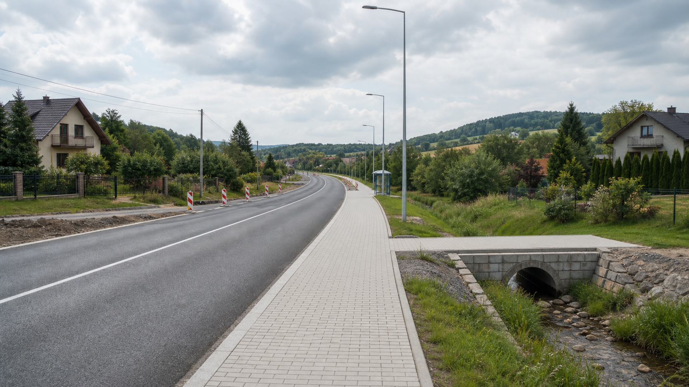

Gmina Mszana
Gmina Mszana
🛣️ Rozbudowa ul. Wolności w Połomi — ZDW szuka wykonawcy. Powstanie nowy chodnik
ZDW Katowice opublikował informację z otwarcia ofert (7.08.2026). W postępowaniu wpłynęło 5 ofert — najtańsza jest poniżej budżetu (4,22 mln zł), najdroższa powyżej (7,84 mln zł). Trwa ocena ofert (tryb podstawowy, art. 275 PZP); po wyborze wykonawca będzie miał 12 miesięcy na realizację.
| Wykonawca | Siedziba | Cena oferty (brutto) |
|---|---|---|
| STRABAG Infrastruktura Południe Sp. z o.o. | Wrocław | 4 218 269,12 zł |
| Interservice Sp. z o.o. | Bielsko-Biała | 4 873 747,68 zł |
| P.U.H. „DOMAX” Arkadiusz Mika | Boronów | 5 754 235,51 zł |
| PUP „ROL-BUD” Sp. j. Pastor Kazimierz | Kobielice | 6 396 152,09 zł |
| Kapibara Sp. z o.o. | Knurów | 7 835 100,00 zł |
Budżet zamawiającego (ZDW): 6 725 051,22 zł brutto. Oferty uszeregowano wg ceny. Wybór wykonawcy nie został jeszcze ogłoszony — trwa ocena ofert. Źródło: informacja z otwarcia ofert ZDW Katowice (07.08.2026, WK.2816.14-WI/TP/260714/1).
Zarząd Dróg Wojewódzkich w Katowicach szuka wykonawcy rozbudowy drogi wojewódzkiej nr 930, czyli ul. Wolności w Połomi. Najważniejszym elementem zadania jest budowa nowego chodnika po prawej stronie drogi, w kierunku Świerklan. Wbrew potocznemu określeniu „remont ulicy" nie chodzi o kompleksową przebudowę całej trasy, lecz o uzupełnienie brakującego ciągu pieszego wraz z niezbędną infrastrukturą.

📍 Gdzie powstanie chodnik?
Początek zaprojektowanego chodnika znajduje się przy skrzyżowaniu ul. Wodzisławskiej i ul. Wolności, czyli dróg wojewódzkich nr 933 i nr 930. Ciąg ma być prowadzony po prawej stronie jezdni, patrząc od ronda w kierunku Świerklan, i stanowić kontynuację istniejącego chodnika. Koniec zaprojektowano w miejscu, w którym nowa nawierzchnia połączy się z istniejącym chodnikiem.
W dokumentacji projektowej długość odcinka określono jako 0,629–0,692 km, natomiast aktualny przedmiar robót przyjmuje 0,692 km. Dlatego najprecyzyjniej mówić o około 692 metrach albo o niespełna 700 metrach nowego ciągu pieszego. Około 100 metrów od skrzyżowania znajduje się zatoka autobusowa w kierunku Świerklan, około 480 metrów dalej droga przecina potok Kolejówka, a w rejonie około 650 metrów znajduje się zatoka w kierunku Mszany.
📐 Parametry i zakres inwestycji
Chodnik ma mieć szerokość użytkową 2,10 m. Szerokość całkowita została określona na 2,30–3,10 m, zależnie od miejsca. Projekt przewiduje również poszerzenie pasa ruchu do 3,50 m oraz przebudowę zjazdów indywidualnych i publicznych.
W ramach zadania zaplanowano także:
- budowę przepustu na potoku Kolejówka i muru oporowego na dojeździe do przepustu;
- odwodnienie w postaci wpustów, ścieków korytkowych, kanalizacji deszczowej i drenaży;
- przebudowę kolidujących sieci elektroenergetycznych i telekomunikacyjnych;
- budowę oświetlenia ulicznego oraz kanału technologicznego;
- montaż barier ochronnych, poręczy i wygrodzeń dla pieszych;
- wycinkę zieleni kolidującej z inwestycją.
Rozbudowa obiektu nad Kolejówką została zaprojektowana jako niezależny ciąg pieszy. W dokumentacji zaznaczono możliwość przyszłej modernizacji tego rozwiązania do ciągu pieszo-rowerowego. Nie oznacza to jednak budowy trasy rowerowej w ramach obecnego zamówienia.
🚧 Jak będzie wyglądać organizacja robót?
Dokumentacja tymczasowej organizacji ruchu dzieli roboty na trzy etapy: budowę chodnika przed projektowaną zatoką autobusową, budowę zatoki wraz z przyległym chodnikiem oraz budowę chodnika od zatoki do końca opracowania.
W pierwszych etapach zakłada się jednostronne zawężenie pasa ruchu i kierowanie ruchem przez wykwalifikowanych pracowników. Dla dalszego odcinka przewidziano możliwość zawężenia pasów do około 2,90 m albo prowadzenia ruchu wahadłowego z użyciem sygnalizatorów. Piesi będą czasowo korzystać z drugiej strony drogi, a przy głębszych wykopach wykonawca ma zapewnić bezpieczne kładki.
Specyfikacja wymaga utrzymania przejezdności oraz stałego dostępu do wszystkich posesji, działek i zakładów przez cały okres robót, z uwzględnieniem dojazdu służb ratunkowych, mieszkańców, użytkowników, dostawców i przedsiębiorców.
📅 Termin i finansowanie
Postępowanie WI/TP/260714/1 zostało opublikowane 21 lipca 2026 r. Oferty można składać do 7 sierpnia 2026 r. do godz. 9.00, a ich otwarcie zaplanowano na godz. 9.05. Na dzień przygotowania tego materiału nie wybrano jeszcze wykonawcy, dlatego nie ma wiążącej daty rozpoczęcia prac.
SWZ określa termin realizacji na 12 miesięcy od dnia udzielenia zamówienia, natomiast opis przedmiotu zamówienia mówi o 12 miesiącach od podpisania umowy.
W budżecie i Wieloletniej Prognozie Finansowej Gminy Mszana zapisano maksymalnie 800 tys. zł dotacji celowej dla Województwa Śląskiego na budowę chodnika. Gmina wskazała szacunkowy koszt całego zadania na 3 633 821 zł. W planie postępowań ZDW z 2025 r. widniała wcześniejsza orientacyjna kwota 2,8 mln zł. 7 sierpnia 2026 r. ZDW podał kwotę, jaką przeznacza na sfinansowanie zadania: 6 725 051,22 zł brutto. Tego samego dnia otwarto oferty — wpłynęło 5, najniższa (STRABAG) to 4 218 269,12 zł, najwyższa (Kapibara) 7 835 100,00 zł. Wybór wykonawcy nie został jeszcze ogłoszony — trwa ocena ofert.
🏡 Co inwestycja oznacza dla mieszkańców?
Najważniejszym efektem zadania ma być ciągły i bezpieczniejszy ruch pieszy od ronda w kierunku Świerklan, w tym dojście do przystanków autobusowych. Prace obejmą również odwodnienie, zjazdy, oświetlenie i zabezpieczenia w miejscach, w których droga przebiega przy skarpach lub potoku.
Jednocześnie mieszkańcy powinni pamiętać, że obecne zamówienie nie jest kompleksową przebudową całej ul. Wolności i nie gwarantuje powstania trasy rowerowej. Po otwarciu ofert (7 sierpnia) ZDW publikuje informacje z otwarcia ofert i dalej ocenia złożone propozycje. Warto śledzić stronę postępowania — w najbliższych tygodniach powinien pojawić się wybór wykonawcy.
🔎 Źródła i zakres weryfikacji
Źródła zostały sprawdzone 6 sierpnia 2026 r. W przypadku postępowania przetargowego wiążące są aktualne dokumenty zamawiającego, a nie wcześniejsze publikacje prasowe. Dokumentacja może zostać zmieniona po tej dacie.